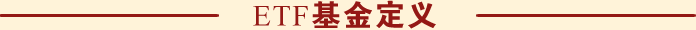

etf是什么意思
一级市场申购赎回（使用一篮子股票）二级市场买、卖（使用现金）
当日申购的份额，不可赎回，可以卖出，当日买入的份额，不可卖出，可以赎回
etf基金指的是交易型开放式指数基金，通常又被称为交易所交易基金（Exchange Traded Funds，简称"ETF"），是一种在交易所上市交易的、基金份额可变的一种开放式基金。交易型开放式指数基金属于开放式基金的一种特殊类型，它综合了封闭式基金和开放式基金的优点，投资者既可以在二级市场买卖ETF份额，又可以向基金管理公司申购或赎回ETF份额。
EFT基金赚钱榜单